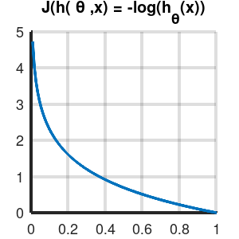
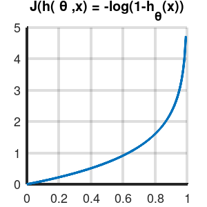
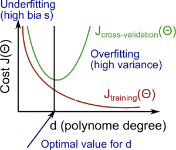

Notas del curso Machine Learning de Andrew Ng en Coursera
Table of Contents
- 1. Info
- 2. Ideas
- 3. Semana 1
- 4. Semana 2
- 4.1. Environment setup instructions
- 4.2. Multivariate linear regression
- 4.2.1. Video: Multivariate linear regression
- 4.2.2. Reading: multiple features
- 4.2.3. Video: Gradient descent for multiple features
- 4.2.4. Reading: Gradient descent for multiple features
- 4.2.5. Video: Gradient descent in practice I - Feature scaling
- 4.2.6. Reading: Gradient descent in practice I - Feature scaling
- 4.2.7. Video: Gradient descent in practice II - Learning rate
- 4.2.8. Reading: Gradient descent in practice II - Learning rate
- 4.2.9. Video: Features and polynomial regression
- 4.2.10. Reading: Features and polynomial regression
- 4.3. Computing parameters analitically
- 4.4. Submitting programming assignments
- 4.5. Review
- 4.6. Octave/Matlab tutorial
- 4.7. Review
- 5. Semana 3
- 6. Semana 4
- 7. Semana 5
- 8. Semana 6
1 Info
- https://www.coursera.org/learn/machine-learning
- Important notes for new ML students
- Hay más test cases en los Recursos del curso.
- Hay que usar Octave > 4.0.0
- Cousera Honor Code
2 Ideas
Ideas mías a lo largo del curso.
- Probar AutoML-Zero.
- Buscar clusters en espacios transformados y muy transformados. Ej: Fourier, Fourier de Fourier, Cepstrum…
2.1 Enlaces
3 Semana 1
Intro, regresión lineal, repaso de Álgebra.
3.1 Introduction
3.1.1 Video: Welcome
3.1.2 Video: What is Machine Learning
- Los algoritmos más importantes son el aprendizaje supervisado y el aprendizaje no supervisado. Es esta además la clasificación más general de algoritmos.
- Otros son el aprendizaje por refuerzo y los sistemas de recomendación.
- Hay que aprender las herramientas, pero es muy importante saber cómo y cuándo usarlas.
- Sea una máquina que debe hacer una tarea T, con un desempeño P y que la exponemos a experiencias (instancias) E de esa tarea T. Se dice que la computadora aprende si su desempeño P en la tarea T aumenta proporcionalmente a la cantidad de experiencias E.
- Otra definición de aprendizaje automático es la capacidad (de la computadora) de aprender a resolver problemas para los que no fue programada. ~
3.1.3 Reading: What is Machine Learning?
3.1.4 Video: Supervised Learning
- En el aprendizaje supervisado, le mostramos al programa ejemplos de entradas y sus correspondientes salidas/respuestas correctas. Ya sabemos cómo son las respuestas corectas; tenemos la idea de que hay una relación entre las entradas y las salidas. Dado un conjunto de entradas y salidas, intentamos obtener un modelo que permita predecir/inferir las salidas a nuevos datos de entrada.
- Los problemas de aprendizaje supervisado se clasifican en problemas de regresión y de clasificación:
- Problema de regresión si el conjunto imagen es continuo. La salida es una variable numérica.
- Problema de clasificación si el conjunto imagen es discreto. La salida es una variable categórica.
- Los algoritmos de Máquinas de Vector Soporte permiten infinitos valores de entrada.
3.1.5 Video: Unsupervised Learning
- En el aprendizaje no supervisado, le damos datos al programa con la intención de encontrar estructuras subyacentes, patrones.
- Un ejemplo típico es el clustering o agrupamiento de datos.
- En el ejemplo de sonido Cocktail Party, según FAQ de la semana 1, lo que usan es Principal Component Analysis, PCA, a mathematical trick that takes two sets of correlated data, and returns two new sets of data that are not correlated. No lo había visto así antes, creo…
3.2 Model and cost function
Vemos la regresión lineal como primer algoritmo de aprendizaje supervisado.
3.2.1 Video: Model representation
Un poco de nomenclatura:
- \(m\): cantidad de ejemplos de entrenamiento.
- \(\vec{x}\): entradas / descriptores / features
- \(\vec{y}\): salidas. \(\hat{\vec{y}}\) son las salidas estimadas.
- \(h_\theta\): función de hipótesis, de estimación. Tiene parámetros \(\vec{\theta}\). Entonces tenemos que \( \hat{y}^{(i)} = h_\theta(x^{(i)}) = h(x,\theta) \)
- \(x^{(i)}\): entrada $i$-ésima del vector de entradas, con índices empezando en 1.
- \((x^{(i)},y^{(i)})\) es un ejemplo de entrenamiento.
- Para regresión lineal de una variable tenemos entonces
\[ \hat{y}^{(i)} = h_\theta(x^{(i)}) = \theta_0 + \theta_1 * x^{(i)} \]
3.2.2 Reading: Model representation
- \(X\): el espacio de los valores de entrada.
- \(Y\): el espacio de los valores de salida.
- El objetivo del aprendizaje supervisado es encontrar una función \(h: X \rightarrow Y\) que sea buena prediciendo salidas a partir de entradas.
3.2.3 Video: Cost function
Formalizamos el problema del aprendizaje como la minimización de una función de costo \(J(\vec{\theta})\). La función de costo habitual y recomendada para problemas de regresión lineal es el error cuadrático medio (Mean Squared Error o Mean Squared Deviation).
Para un predictor como lo es \(h_\theta\), el MSE se define como \[ MSE = \frac{1}{N} (\sum_{1}^{N}Y_i - \hat{Y}_i )^2\]
En nuestro caso vamos a definir a la función de costo para este problema de regresión lineal univariable como
\[ J(\theta_0 , \theta_1) = \frac{1}{2m} \sum_{i=1}^m( h_\theta(x^{(i)}) - y^{(i)} )^2 \] \[ J(\theta_0 , \theta_1) = \frac{1}{2m} \sum_{i=1}^m( \theta_0 + \theta_1 * x^{(i)} - y^{(i)} )^2 \]
- El factor \(1/2\) es para ahorrar cálculos, puesto que en redes neuronales al hacer backpropagation o gradient descent hay que derivar esta función de error y entonces con este \(1/2\) simplificamos el \(2\) de la derivada del cuadrado.
La optimización es entonces encontrar los parámetros \(\theta\) que minimizan la función de costo: \[ \underset{\theta_0 , \theta_1}{\text{min}} J(\theta_0 , \theta_1)\]
En las notas del curso encontramos la forma matricial, que luego usamos para hacer descenso por el gradiente de forma matricial. Lo pongo acá por completitud.
MSE: \[ J(\theta) = \frac{1}{2m} (X\times\theta-Y)^T(X\times\theta-Y) \]
El producto implica la sumatoria y el cuadrado elemento a elemento.
3.2.4 Reading: Cost function
3.2.5 Video: Cost function intuition I
3.2.6 Reading: Cost function intuition I
3.2.7 Video: Cost function intuition II
3.2.8 Reading: Cost function intuition II
3.3 Parameter learning
3.3.1 Video: Gradient descent
El descenso por el gradiente es un algoritmo de optimización que vamos a usar (entre otras cosas) para minimizar la función de costo.
Hacer \[ \vec{\theta}[n+1] := \vec{\theta}[n] - \alpha \frac{\partial J(\vec{\theta})}{\partial\theta} \]
(expresado de otra manera)
\[ {\theta}_j[n+1] := {\theta}_j[n] - \alpha \frac{\partial J(\vec{\theta})}{\partial\theta} \]
Hasta la convergencia de \(\vec{\theta}\), equivalente a la convergencia de \(J(\vec{\theta})\):
\[ \vec{\theta}[n] - \vec{\theta}[n-1] < \vec{\epsilon} \] \[ J(\vec{\theta}[n]) - J(\vec{\theta}[n-1]) < \epsilon \]
- Nomenclatura: usamos \(:=\) como operador de asignación.
- \(\alpha\) es la tasa de aprendizaje o learning rate del algoritmo.
Para calcular la derivada hacemos derivadas parciales. Actualizamos los parámetros simultáneamente en cada paso. Si actualizamos de a uno y recalculamos estamos haciendo otro algoritmo, que probablemente también converja pero es distinto.
Cuando la función de costo es el error cuadrático medio (MSE), la fórmula de actualización queda:
\[ \theta_j[n+1] := {\theta}_j[n] - \frac{\alpha}{m} \sum_{i=1}^m( h_\theta(x^{(i)}) - y^{(i)} ) x_j^{(i)} \]
- El primer termino de la sumatoria es la magnitud y dirección del error.
- El segundo término de la sumatoria es la sensibilidad de J respecto al parámetro, y resulta ser igual a la magnitud del descriptor asociado a ese parámetro.
3.3.2 Reading: Gradient descent
3.3.3 Video: Gradient descent intuition
- Si \(\alpha\) es muy grande, el algoritmo puede oscilar o incluso diverger.
- Si \(\alpha\) es muy chica, puede tardar mucho en converger.
- Con \(\alpha\) fija, los "pasos" que da el algoritmo son cada vez más chicos a medida que la función de costo se aproxima a un mínimo local.
3.3.4 Reading: Gradient descent intuition
3.3.5 Video: Gradient descent for linear regression
Dice Andrew cerca del minuto 4:40:
But, it turns out that that the cost function for linear regression is always going to be a bow shaped function like this. The technical term for this is that this is called a convex function.
¿Por qué?
- La función de costo \(J(\vec{\theta})\) es el error cuadrático medio (MSE).
- El MSE es cuadrático respecto a los parámetros siempre y cuando estos sean lineales, de grado 1. La función de hipótesis debe ser lineal respecto a los parámetros para que la función de costo sea cuadrática.
- Sea por ejemplo \[ h(x,y) = a.x^2 + b.y^2 - c.x^2 y^2 \]. Esta función tiene más de un mínimo.

- Su MSE quedaría algo como \[ x^4 + 2 x^2 y^2 - 2 x^4 y^2 + y^4 - 2 x^2 y^4 + x^4 y^4 \] (sólo la elevé al cuadrado)

Hay otras formas de estimar los parámetros (regresores). Una de ellas es el método de los mínimos cuadrados (/Ordinary Least Squares/). El descenso por el gradiente es más fácil de computar que OLS, en el caso de datasets grandes.
En realidad todo lo que vimos es descenso por el gradiente por lotes, o batch gradient descent, que es cuando la función de costo se optimiza usando todas las entradas disponibles. Esto es costoso.
- TODO Leer más de regresión lineal
3.3.6 Reading: Gradient descent for linear regression
3.4 Linear Algebra review
3.4.1 Video: Matrix vector multiplication
- Más adelante vamos a ver por qué es mejor vectorizar calculos en lugar de iterar.
- Hace un truco interesante que es incluir a la ordenada al origen dentro del vector de parámetros —en realidad está bien, es un parámetr calculado—, y luego introduce una columna de \(1\)s en la matriz de entradas.
- La alternativa es sumar la columna aparte. \(A*X + B\)
3.4.2 Video: Matrix matrix multiplication
- Acá hace el mismo truco pero para hacer varias predicciones a la vez: usa varios modelos y varias entradas.
3.4.3 Video: Inverse and transpose
Interesante:
But the intuition if you want is that you can think of matrices as not have an inverse that is somehow too close to zero in some sense.
- Las matrices que no tienen inversa son matrices singulares o degeneradas.
- Asumo que se refiere a matrices cuadradas, que podrían tener inversa.
4 Semana 2
4.1 Environment setup instructions
4.2 Multivariate linear regression
4.2.1 Video: Multivariate linear regression
En la regresión lineal multivariable o regresión lineal múltiple, tenemos varios valores de entrada o descriptores. Para tener una notación más compacta y conveniente, vamos a definir:
- \(\theta_0=1\) ;
- \(n\) es la cantidad de entradas, descriptores;
- vamos a usar \(\vec{\theta}\) con índice \(0\);
- y \(\vec{\theta}_j^{(i)}\) es el elemento j-ésimo del ejemplo i-ésimo.
Entonces \(\vec{\theta}\) tiene \(n+1\) elementos y \[ \vec{\theta} = 1 + \theta_1 + \theta_2 + \dots + \theta_n \]
Y luego \[ \vec{h_\theta}(\vec{x}) = \vec{\theta}^T \cdot \vec{x} = \vec{x}^T \cdot \vec{\theta} \]
- Intuición para el ejemplo de estimar el precio de un inmueble: \(\theta_0\) es el precio base.
En 4.3.1 se introduce notación matricial que luego en el ejercicio 1 usamos para expresar todo de forma vectorizada. Dejo todo acá para más completitud.
\[ \hat{Y}(θ,X) = X θ ]\
4.2.2 Reading: multiple features
4.2.3 Video: Gradient descent for multiple features
La regla de actualización era:
\[ \vec{\theta}[n+1] := \vec{\theta}[n] - \alpha \frac{\partial J(\vec{\theta})}{\partial\theta} \]
Y para cuando la función de costo es el error cuadrático medio (MSE), queda (para actualización con todos los \(m\) ejemplos):
\[ \theta_j[n+1] := {\theta}_j[n] - \frac{\alpha}{m} \sum_{i=1}^m( h_\theta(x^{(i)}) - y^{(i)} ) x_j^{(i)} \]
- Puedo ver el factor de avance luego de \(\alpha\) como el aporte al error medio que hizo el descriptor \(x_j\) .
- El producto vectorial y la resta son el error medio para ese vector de entrada.
- El factor \(x_j\) es el aporte de ese elemento, en esa dirección.
- La dirección final es la suma vectorial de los elementos.
La versión vectorizada/matricial del algoritmo está en las notas del curso y después la usamos en el ejercicio de programación 1. La dejo acá por completitud.
\[ \theta_{n \times 1}[i+1] = \theta_{n \times 1}[i] - \frac{\alpha}{m} X_{m \times n}^T (X_{m \times n} \theta_{n \times 1} - Y_{m \times 1} )_{m \times 1} \] \[ \theta_{}[i+1] = \theta[i] - \frac{\alpha}{m} X^T (X \theta - Y) \]
4.2.4 Reading: Gradient descent for multiple features
4.2.5 Video: Gradient descent in practice I - Feature scaling
- Al parecer, el algoritmo de descenso por el gradiente converge bastante más rápidamente si los descriptores están en el mismo orden de magnitud.
- Andrew propone que estén más o menos en el rango \(-3 < x_j < 3\) y duda si \(-\frac{1}{3} < x < \frac{1}{3}\)
- Para esto se suele normalizar cada descriptor respecto al rango de sí mismo en la muestra (los m ejemplos de entrada) o respecto a la desviación estándar. Esto se llama feature scaling.
- Otra práctica habitual es centrar en cero los valores, para lo cual se resta la media de la muestra. Esto se llama mean normalization.
- Más de feature scaling y mean normalization
De la ecuación de actualización de los parámetros de la ecuación de hipótesis infiero que el vector se mueve más rápidamente en dirección de los parámetros más grandes. Sin embargo en 4.2.6 dice:
This is because θ will descend quickly on small ranges and slowly on large ranges, and so will oscillate inefficiently down to the optimum when the variables are very uneven.
- DONE Averiguar más de esto. ¿Por qué se hace? ¿Tienen que ser de la misma magnitud o ser chicos?
- Ver https://www.robertoreif.com/blog/2017/12/21/importance-of-feature-scaling-in-data-modeling-part-2
- Ver https://math.stackexchange.com/questions/2341704/feature-scalings-effect-on-gradient-descent
Estaba entendiendo mal las curvas de nivel. El eje corto de las elipses es el asociado a los descriptores más grandes, con más rango. Son curvas de nivel de \(J(\theta)\), no de \(J(x)\). Ahora si estoy de acuerdo.
En regresión lineal (quizás puedo generalizarlo a cualquiera) los parámetros tienen rangos "inversos" a los de los descriptores que multiplican. Si un descriptor tiene un rango grande, entonces su parámetro asociado va a tener un rango chico.
Se podría solucionar también con learning rates diferenciados: más grandes para los descriptores de más rango, más chicos para los de menos rango.
¡Lo que dice en 4.2.6 está mal expresado entonces!
- TODO Corregir https://math.stackexchange.com/questions/2341704/feature-scalings-effect-on-gradient-descent
- DONE Averiguar más de esto. ¿Por qué se hace? ¿Tienen que ser de la misma magnitud o ser chicos?
4.2.6 Reading: Gradient descent in practice I - Feature scaling
4.2.7 Video: Gradient descent in practice II - Learning rate
- Si la función de costo \(J(\vec{\theta})\) diverge u oscila, entonces mi tasa de aprendizaje \(\alpha\) es muy grande. Si es muy chica, converge lentamente.
- Puedo verlo graficando la función de costo.
- Elegir el valor de \(\alpha\) es, a priori, por prueba y error. ¿Habrá heurísticas para determinar un buen valor inicial?
- La condición de convergencia también suele depender del problema. Andrew habla de valores absolutos… ¿por qué no usar un \(\epsilon\) relativo?
4.2.8 Reading: Gradient descent in practice II - Learning rate
4.2.9 Video: Features and polynomial regression
4.2.10 Reading: Features and polynomial regression
- La regresión lineal es ajustar un modelo lineal, de grado 1, una combinación lineal entre las entradas y parámetros.
- Podemos ajustar modelos no lineales como hipótesis si codificamos estas no linealidades dentro de los descriptores. Por ejemplo, para el caso de la estimación de precios de casas, un posible descriptor podría ser el cuadrado del área, y ahí estamos incluyendo algo cuadrático en el modelo.
- Al incluir las no linealidades en los descriptores, pero todavía usando los parámetros como multiplicadores de orden 1, podemos seguir usando el descenso por el gradiente para optimizar.
- Andrew habla también de usar relaciones entre entradas básicas para construir otras entradas. Por ejemplo, el producto de dos descriptores hace un nuevo descriptor que codifica otra relación.
4.3 Computing parameters analitically
4.3.1 Video: Normal equation
- Otra forma de optimizar la regresión lineal es resolverla analíticamente con el método de los mínimos cuadrados lineales / ecuación normal. Esto da la solución óptima (que existe porque hemos dicho que para regresión lineal es un espacio de búsqueda cónvexo con un solo mínimo).
\[ \vec{\theta} = ( X^T \times X )^{-1} \times X^T \times \vec{y} \]
\[ X = \left[ x^{(i)} \right] \]
- A \(X\) la llamamos matriz de diseño. Cada fila es un ejemplo, y tiene tamaño $m × n+1 $
- La complejidad de invertir una matriz es \(O(n^3)\) y esto se pone lento para \(n > 10^5\). La complejidad del descenso por el gradiente, en cambio, es de \(O(k \cdot n^2)\).
- \(( X^T \times X )^{-1} \times X^T = X^{+}\) es la pseudoinversa de \(X\), y el método de mínimos cuadrados no es más que una solución (óptima en el sentido del error cuadrático) de un sistema de ecuaciones sobredeterminado.
- La pseudoinversa se puede calcular con Singular Value Decomposition o Descomposición QR, por ejemplo.
- La regresión por mínimos cuadrados asume muchas cosas que no necesariamente siempre se cumplen. Ver la regresión robusta como alternativa.
4.3.2 Reading: Normal equation
4.3.3 Video: Normal equation noninvertibility
Si \(( X^T \times X )\) no es invertible, entonces puede haber 2 problemas:
- El sistema esta subdeterminado. Faltan ejemplos, \(m < n\) / tenemos muchos descriptores.
- Después vamos a ver que se soluciona con regularización.
- Algunos descriptores están muy correlacionados / son linealmente dependientes.
Si no es invertible naturalmente (es singular o degenerada) igual se puede invertir con la pseudoinversa. Igual esto no sería problema si hubiésemos usado la pseudoinversa desde un principio en lugar de estar haciéndolo manualmente. Y, nuevamente, seguro hay métodos más robustos (aunque no hay que dejar de hacer análisis de la información con la que contamos).
4.3.4 Reading: Normal equation noninvertibility
4.4 Submitting programming assignments
4.5 Review
4.6 Octave/Matlab tutorial
% Para ver una matriz/vector como píxeles con color A = magic(9) figure imagesc(A) colorbar colormap gray
4.7 Review
4.7.1 Programming assignment 1: linear regression
- Mi gradient descent convergía pero no al mismo resultado exacto, y más rápida o lentamente. Me faltaba el factor \(1/m\).
- Armé una versión vectorizada del gradient descent pero es distinta a la propuesta:
La mía:
- usé \(n\) como la longitud de \(\theta\), incluyendo los \(1\)s.
M = length(y); % number of training examples N = length(theta); error = (X * theta) - y; % Mx1 % ponderated_error = repmat(error, [1, N]) .* X; % MxN % ponderated_error = error * ones(1,n) * X % MxN, equivale al broadcasting ponderated_error = error .* X; % Broadcasting. MxN % gradient = sum(ponderated_error,1); % 1xN gradient = ones(1,M) * ponderated_error; % 1xN, equivalente a la sumatoria theta = theta - (alpha/M) * gradient'; % Nx1
\[ \theta_{n \times 1}[i+1] = \theta_{n \times 1}[i] - \frac{\alpha}{m} \left[ 1_{1 \times m} \left( X_{m \times n} \theta_{n \times 1} - Y_{m \times 1} \right)_{m \times 1} 1_{1 \times n} X_{m \times n} \right]^T \]
La original es más compacta:
\[ \theta_{n \times 1}[i+1] = \theta_{n \times 1}[i] - \frac{\alpha}{m} X_{m \times n}^T (X_{m \times n} \theta_{n \times 1} - Y_{m \times 1} )_{m \times 1} \]
5 Semana 3
5.1 Classification and representation
5.1.1 Classification
Vamos a ver la regresión logística que es un algoritmo de clasificación (aunque su nombre diga regresión).
La regresión lineal no es un buen método para la clasificación en variables discretas. Acá necesitamos algo más no lineal. Una opción es usar regresión lineal + un umbral arbitrario de separación, pero aún no es suficiente.
Vamos a ver clasificación binaria. Definimos como \(0\) y \(1\) a las clases. También usamos etiqueta para denominar a la salida \(h_\theta(x)\).
5.1.2 Hypothesis representation
En clasificación binaria, los resultados observados sólo pueden tomar los valores \(0\) y \(1\), y por tanto nuestra función de hipótesis debería también sólo tomar esos valores.
Para empezar elegimos una función que esté acotada a ese rango. Una opción es la función logística o sigmoidea:
\[ h(z) = \frac{1}{1+e^z} \]
\[ h(\theta,x) = h_\theta(x) = \frac{1}{1+e^{\theta^T x}}\]
- Mapea los reales al intervalo \([0, 1]\).
Podemos interpretar los resultados como la probabilidad de que la hipótesis tome un valor, dada determinada entrada.
- La suma de las probabilidades debe ser \(1\).
- La función logística o sigmoidea
- Se parece a la función cumulativa o función de distribución acumulada de una distribución normal/gaussiana.
- Pero esta tiene una función explícita, mientras que la FDA de la gaussiana no tiene forma cerrada.
- La función de densidad de probabilidad asociada "Se parece a la distribución normal en su forma, pero tiene colas más pesadas (y, por lo tanto, menor curtosis)". Wikipedia: Distribución logística
- Puedo pensar que la FDP de la distribución logística me indica la cantidad de información que me da el valor de un descriptor. En el pico es donde más aporta; luego mientras más me alejo del centro, más claro es que es de una clase o de la otra.
- Es una aproximación suave de la función escalón.

\[ f(x) = \frac{L}{1+e^{-k(x-x_0)}} \]
- \(L\) es el valor máximo.
- \(k\) es la tasa de crecimiento o pendiente de la curva.
- \(x_0\) es el centro
- Se parece a la función cumulativa o función de distribución acumulada de una distribución normal/gaussiana.
5.1.3 Decision boundary
La clasificación es discreta; para hacerla discreta necesitamos agregar un umbral a nuestra función de hipótesis. No entiendo por qué pone el umbral como si fuese una cosa aparte de la función de hipótesis. Entonces, para la regresión logística hacemos:
\[ y = 0 \quad \text{si} \quad h(z) = h(z(\theta, x)) = h(\theta^T x) \lt 0,5 \] \[ y = 0 \quad \text{si} \quad h(z) = h(z(\theta, x)) = h(\theta^T x) \geq 0,5 \]
Lo que equivale a
\[ y = 0 \quad \text{si} \quad \theta^T x < 0,5 \] \[ y = 1 \quad \text{si} \quad \theta^T x \ge 0,5 \]
La función de entrada a la sigmoidea, \(z(\theta,x)\) define el umbral de decisión. Al igual que vimos para regresión lineal, esta función no tiene por qué ser lineal con respecto a los descriptores (¿mas sí lineal respecto a los parámetros?), y es la que va a separar las clases en su espacio. Por ejemplo, para dos variables podría ser un elipsoide: \( z(\theta,x) = \theta_0 + \theta_1 x_1 + \theta_2 x_2 + \theta_3 x_1^2 + \theta_4 x_2^2 \).
5.2 Logistic regression model
5.2.1 Cost function
Sea la función de costo \(J\) la media de una función de error:
\[ J(\theta) = \frac{1}{m} \sum_1^m error(\hat{y}, y) \]
Si usamos el error cuadrático medio como función de error para optimizar con el descenso por el gradiente, vamos a tener que derivar una función no lineal. Esto es porque la función logística/sigmoidea \(h(z)\) no es lineal con respecto a los parámetros θ, y por tanto el error cuadrático medio no es una función convexa; esto implica que tiene (¿o puede tener?) más de un mínimo.
Lo que hacemos entonces es proponer otra función de error que sea convexa y diferenciable. Por supuesto, tiene que penalizar las predicciones/hipótesis erróneas. La que se propone es
\[ error(h_\theta(x)) = error(h(\theta,x) = \quad -\log(h_\theta(x)) \quad \text{si} \quad y = 1 \] \[ error(h_\theta(x)) = error(h(\theta,x) = \quad -\log(1-h_\theta(x)) \quad \text{si} \quad y = 0 \]


- Nótese que tienden a infinito en \(0\) y \(1\) respectivamente.
- Usamos el logaritmo natural, base \(e\).
En la sección siguiente Andrew dice que esta función de costo (en realidad su forma simplificada) se puede derivar estadísticamente a partir del principio de estimación de máxima verisimilitud.
5.2.2 Simplified cost function and gradient descent
- Forma simplificada
Teníamos a la función de error para la regresión logística como:
\[ error(h_\theta(x)) = error(h(\theta,x)) = \quad -\log(h_\theta(x)) \quad \text{si} \quad y = 1 \] \[ error(h_\theta(x)) = error(h(\theta,x)) = \quad -\log(1-h_\theta(x)) \quad \text{si} \quad y = 0 \]
La forma simplificada es:
\[ error(h(\theta,x)) = y (-\log(h_\theta(x))) + (1-y) (-\log(1-h_\theta(x))) \]
\[ error(h(\theta,x)) = -y \log(\hat{y}) - (1-y) \log(\hat{y}) \]
Esta función es convexa (si \(h\) es la sigmoidea, al menos).
Luego la función de costo queda:
\[ J(h_\theta(x)) = J(h(\theta,x)) = \frac{1}{m} \sum_{i=1}^m \left[ -y^{(i)} \log(h_\theta(x^{(i)})) - (1-y^{(i)}) \log(1-h_\theta(x^{(i)})) \right] \]
La forma vectorizada/matricial es:
\[ J(h(\theta,X)) = \frac{1}{m} \left[ - Y^T \log(h(X\theta)) - (1-Y)^T \log(1-h(X\theta)) \right] \]
- Descenso por el gradiente
Resulta que la derivada \(\delta J(\theta,x)/\delta \theta\), es la misma que la que obtuvimos usando el error cuadrático medio (MSE) como función de costo para regresión lineal, y entonces la formula de actualización de parámetros es la misma:
\[ \theta_j[n+1] := {\theta}_j[n] - \frac{\alpha}{m} \sum_{i=1}^m( h_\theta(x^{(i)}) - y^{(i)} ) x_j^{(i)} \]
En forma vectorizada/matricial:
\[ \theta_{}[i+1] = \theta[i] - \frac{\alpha}{m} X^T (h(X \theta) - Y) \]
5.2.3 Advanced optimization
Hay algoritmos generales de optimización mejores (pero más complejos) que el descenso por el gradiente. Andrew nombra:
- Gradientes conjugados
- BFGS (Broyden–Fletcher–Goldfarb–Shanno algorithm)
- L-BFGS (Limited memory BFGS)
En Octave tenemos la función fminunc (de function minimize unconstrained) que nos permite optimizar usando una función de costo arbitraria. Le tenemos que proveer esa función de costo, que calcula la función de costo y el gradiente en cada iteración. En el ejemplo de Andrew, la función de costo calcula el gradiente de forma analítica, pero asumo que podrías también tener una memoria y usar diferencias.
5.3 Multiclass classification
5.3.1 Multiclass classification: one vs all
Si tenemos \(n\) salidas discretas posibles, podemos modelar el problema con \(n\) clasificadores binarios, que toman una salida como caso positivo y el resto como negativo.
Una vez que clasificamos con todos los clasificadores, elegimos la salida definitiva como aquella que haya tenido la mayor confianza; y entonces tenemos que ver la probabilidad predicha antes de discretizarla.
Nótese que esto también se cumple en los binarios cuando \(n=2\): podemos verlo como que ambos clasificadores definen la misma frontera de decisión.
5.4 Solving the problem of overfitting
5.4.1 The problem of overfitting
Empezamos a evaluar la bondad de ajuste de nuestros modelos.
- Un modelo subajustado (underfitted) o de alto sesgo (high bias) tiene mucho error para los datos con los que se entrenó, y por ende muy probablemente tenga mucho error con entradas nuevas. El modelo no captura las características del espacio del problema.
- El sesgo se asocia con prejuicio. El modelo prejuzga incorrectamente cómo deberían ser las entradas.
- Un modelo sobreajustado (overfitted) predice demasiado correctamente los datos con los que se ajustó, pero no predice correctamente entradas que sean un poco distintas; no generaliza. También se habla de que es un modelo con alta varianza (high variance), porque el espacio de funciones de hipótesis (de la complejidad propuesta) que predicen bien es muy grande; hay muchos grados de libertad.
En los ejemplos mostrados, el ajuste se incrementa con el grado de las funciones de hipótesis, para regresión lineal. Entonces complejizar las funciones de hipótesis implica agregar más descriptores —reales o sintéticos—.
- Opciones para reducir el sobreajuste
Las principales formas de reducir el sobreajuste:
- Reducir la cantidad de descriptores.
- Manualmente o con métodos automáticos de selección de modelo.
- Perdemos información codificada en los descriptores que eliminamos.
- Usar regularización.
- Mantenemos todos los descriptores pero los ponderamos.
- Reducir la cantidad de descriptores.
5.4.2 Cost function
Introducimos un parámetro de regularización \(\lambda\) en la función de costo, que pondera la suma de los cuadrados de los parámetros \(\theta\).
- Creo que este tipo de regularización tiene un nombre.
- Usamos el cuadrado para que no se cancelen entre sí y porque es derivable supongo.
Por ejemplo, para MSE:
\[ J(\theta,x,h(x),\lambda) = \frac{1}{2m} \left( \sum_{i=1}^{m} \left[ h(\theta,x^{(i)}) - y^{(i)} \right]^2 + \lambda \sum_{j=1}^{n} \theta_j^2 \right) \]
- Se suele omitir la ordenada al origen, término de sesgo o intercepto \(\theta_0\) porque no afecta mucho a los resultados.
- Me parece que debe haber una razón más interesante, porque esta decisión hace que tengamos que calcular las funciones de costo de forma separada para \(\theta_0\).
- En verdad es incorrecto pretender que el intercepto sea pequeño. Ver abajo en 5.4.2.0.0.1.
- Me parece que debe haber una razón más interesante, porque esta decisión hace que tengamos que calcular las funciones de costo de forma separada para \(\theta_0\).
Lo que buscamos es tener parámetros pequeños, lo que hace que la función de hipótesis sea suave, simple.
Más adelante vamos a ver formas de determinar el valor del parámetro de regularización \(\lambda\) para que funcione. Si es muy grande, hay subajuste, y si es muy chico seguimos con sobreajuste.
- DONE Buscar por qué no usamos \(\theta_0\)
El intercepto es nuestro factor de prejuicio que es independente de los descriptores. Es nuestra respuesta por defecto cuando no tenemos información, y no tiene por qué ser un valor chico. Por tanto no lo introducimos en el algoritmo de regularización.
Recordemos que el intercepto es una variable independiente, la ordenada al origen. Lo introducimos dentro del vector de parámetros solo por conveniencia, para simplificar los cálculos.
5.4.3 Regularized linear regression
La función de costo usando error cuadrático medio y regresión lineal nos queda
\[ J(\theta,x,h(x),\lambda) = \frac{1}{2m} \left( \sum_{i=1}^{m} \left[ h(\theta,x^{(i)}) - y^{(i)} \right]^2 + \lambda \sum_{j=1}^{n} \theta_j^2 \right) \]
Nótese que \(j\) empieza en \(1\). La regla de actualización derivada es:
\[ \theta_j[n+1] := {\theta}_j[n] - \frac{\alpha}{m} \sum_{i=1}^m( h_\theta(x^{(i)}) - y^{(i)} ) x_j^{(i)} \quad \text{si} \quad j=0 \]
\[ \theta_j[n+1] := {\theta}_j[n] - \frac{\alpha}{m} \sum_{i=1}^m( h_\theta(x^{(i)}) - y^{(i)} ) x_j^{(i)} + \frac{\lambda}{m} \theta_j \quad \text{si} \quad j>0 \]
Factorizando \(\theta_j\) de esta última ecuación nos queda
\[ \theta_j[n+1] := {\theta}_j[n](1 - \frac{\alpha\lambda}{m}) - \frac{\alpha}{m} \sum_{i=1}^m( h_\theta(x^{(i)}) - y^{(i)} ) x_j^{(i)} \quad \text{si} \quad j>0 \]
El factor \((1 - \frac{\alpha\lambda}{m})\) nos indica que en todas las actualizaciones se comienza reduciendo el valor anterior de los parámetros.
- Forma matricial/vectorizada
La forma matricial/vectorizada queda
\[ J(\theta, X, \lambda) = \frac{1}{2m} (X\theta - Y) + \frac{\lambda}{2m} \theta(1:n)^T \theta(1:n) \]
La actualización necesita 2 etapas: la primera es el cálculo normal sin regularización, y de aquí guardamos \(\theta_0\); en la segunda sumamos el termino de regularización; y finalmente reemplazamos con el \(\theta_0\) encontrado anteriormente.
\[ \theta[i+1]^{(a)} := \theta[i] - \frac{\alpha}{m} X^T (h(X \theta) - Y) \] \[ \theta_0[i+1]^{} := \theta[i+1]^{(a)}(0) \] \[ \theta[i+1]^{} := \theta[i+1]^{(a)} + \frac{\lambda}{2m} \theta[i] \] \[ \theta[i+1](0) := \theta_0[i+1] \]
- La ecuación normal con regularización
La ecuación normal era
\[ \theta = [ ( X^T \times X)^{-1} \times X^T ] \times Y \]
Agregamos un término de regularización:
\[ \theta = [ ( X^T \times X \times \lambda L)^{-1} \times X^T ] \times Y \]
Donde L es una matriz diagonal cuyo primer elemento de la diagonal principal es \(0\) e indica que no queremos que la regularización afecte al parámetro θ0 .
Este termino de regularización hace que esa matriz sea invertible aunque se trate de un sistema subdeterminado (siempre que \(\lambda>0\)).
- En las preguntas frecuentes de la semana 3 dicen que acá hay un "boceto de demonstración".
5.4.4 Regularized logistic regression
La función de costo de la regresión logística con regularización queda:
\[ J(h_\theta(x), \lambda) = J(h(\theta,x)) = \frac{1}{m} \sum_{i=1}^m \left[-y^{(i)} \log(h_\theta(x^{(i)})) - (1-y^{(i)}) \log(1-h_\theta(x^{(i)})) \right] + \frac{\lambda}{2m} \sum_{j=1}^n \theta_j^2 \]
La forma vectorizada/matricial:
\[ J(h(\theta,X), \lambda) = \frac{1}{m} \left[ -Y^T \log(h(X\theta)) - (1-Y)^T \log(1-h(X\theta)) \right] + \frac{\lambda}{2m} \theta(1:n)^T \theta(1:n) \]
La regla de actualización es igual que para regresión lineal con MSE, calculando por separado \(\theta_0\).
5.5 Review
5.5.1 Quiz: Regularization
- Agregar nuevos descriptores nos da una hipótesis igual o mejor a la que tenemos antes de agregarlos, en los datos de entrenamiento/modelado.
- Asumo que asume convergencia.
5.5.2 Programming assignment: logistic regression
- Corregí algunas funciones vectorizadas de mis notas.
- El logaritmo es logaritmo natural, no base 10. Por tanto debería escribir \(ln\) en lugar de \(log\), aunque en Octave la función es
log. - Cross entropy
- Usamos feature mapping para crear nuevos descriptores a partir de los 2 que teníamos. Los nuevos son todas las combinaciones lineales posibles de descriptores, hasta cierto grado.
function out = mapFeature(X1, X2) % MAPFEATURE Feature mapping function to polynomial features % % MAPFEATURE(X1, X2) maps the two input features % to quadratic features used in the regularization exercise. % % Returns a new feature array with more features, comprising of % X1, X2, X1.^2, X2.^2, X1*X2, X1*X2.^2, etc.. % % Inputs X1, X2 must be the same size % degree = 6; out = ones(size(X1(:,1))); for i = 1:degree for j = 0:i out(:, end+1) = (X1.^(i-j)).*(X2.^j); end end end % --------- % Add Polynomial Features % Note that mapFeature also adds a column of ones for us, so the intercept % term is handled X = mapFeature(X(:,1), X(:,2));
- \(\theta_0\): manejé los distintos gradientes así:
grad = (1/m) * X'*(sigmoid(X*theta) - y); grad0 = grad(1); grad = grad + (lambda/m).*theta; grad(1) = grad0;
6 Semana 4
Empezamos a ver redes neuronales.
6.1 Motivations
6.1.1 Non-linear hypotheses
Las redes neuronales son de los clasificadores más avanzados y usados hoy en día.
Para problemas poco lineales, la regresión logística empieza a necesitar muchos descriptores. Demasiados. Sea por ejemplo un problema con dos descriptores \(x_1\) y \(x_2\). Si queremos más expresividad de clasificación y añadimos como descriptores sintéticos todos los productos de segundo orden, tenemos $x12 , x22, x1 x2 $, y tendríamos un total de 5 descriptores. Este total crece como \(O(\frac{n^2}{2})\). Los de tercer orden crecen como \(O(n^3)\).
Hay muchos problemas que de entrada ya están definidos por muchos descriptores. Un ejemplo: las imágenes digitales. Por ejemplo, una imagen de 100×100px requeriría aproximadamente 50 millones de descriptores de segundo grado.
6.1.2 Neurons and the brain
- The "one learning algorithm" hypotesis: el cerebro tiene el mismo algoritmo de aprendizaje siempre, y se adapta a cualquier entrada.
- TODO https://www.lesswrong.com/posts/9Yc7Pp7szcjPgPsjf/the-brain-as-a-universal-learning-machine
- TODO https://www.youtube.com/watch?v=AY4ajbu_G3k
- TODO https://www.youtube.com/watch?v=NKpuX_yzdYs
- TODO https://www.youtube.com/watch?v=zIwLWfaAg-8
- TODO https://www.wired.com/2013/05/neuro-artificial-intelligence/
6.2 Neural networks
6.2.1 Model representation I
Está largo de escribir así que copio la imagen:

Algo de nomenclatura y convenciones:
- Es equivalente hablar de una unidad, una neurona, la salida de una neurona o la activación de una neurona. Siempre hablamos del resultado de la función de activación ante ciertas entradas y parámetros o pesos: \(g(\theta,x)\). La neurona en sí no tiene significado en el modelo, aunque lo tiene en el diagrama.
- La unidad 1 de la capa 2 es \(a_1^{(2)}\).
- Se suele omitir la unidad de sesgo de cada capa, \(a_0^{(j)}\), porque vale siempre 1. Esta es la que se multiplica por \(\theta_0\). DISCREPO.
- \(h_{\Theta}^{}(\vec{x}^{})\) es la salida final de la red neuronal, en función de las entradas.
- La función de activación típica es la función logística/sigmoidea.
- A los parámetros de la función también les decimos pesos.
- Θ(j) es la matriz de pesos que relaciona la capa \(j\) con la siguiente \(j+1\). Si una capa \(j\) tiene \(s_j\) unidades y la siguiente es \(j+1\) con \(s_{j+1}\) unidades, la dimensión de \(\Theta^{(j)}\) será \((s_{j+1})\times(s_j+1)\) (entradas × (salidas + entradas independientes)); el \(+1\) es por la unidad de sesgo.
- En los diagramas se funden axones y dendritas de capas conectadas, adyacentes. Entonces los únicos axones son los de la capa de salida.
- A las capas que no son de salida o entrada se les suele llamar capas ocultas.
6.2.2 Model representation II
Este modelo básico de red neuronal es un conjunto de funciones logísticas encadenadas. La forma de conectar las neuronas (arquitectura) le va a permitir aprender funciones no lineales complejas.
En forma vectorizada y asumiendo la misma función de activación \(g^{(j)}\) para todas las neuronas:
\[ h_{\Theta}^{}(\vec{x}^{}) = h(g, \vec{x}, \Theta) \] \[ \vec{a}^{(j) }= g_{}^{}(\vec{z}^{(j)}) = g(\Theta^{(j-1)} \vec{a}^{(j-1)}) \]
6.3 Applications
6.3.1 Examples and intuitions I
Con una neurona de 3 entradas puedo calcular las funciones AND y OR.
6.3.2 Examples and intuitions II
Ejemplo de XNOR.
6.3.3 Multiclass classification
Para clasificación multiclase solo tenemos que tener tantas salidas como clases. Luego, codificamos la salida como un vector "one hot", donde todos los elementos son \(0\) menos el de la salida correcta, que es \(1\).
Las salidas de la red \(\vec{\hat{y}} = h_\Theta(\vec{x})\) no son una distribución de probabilidad, no necesariamente suman 1. Son la salida de distintas sigmoideas, y cada una representa la confianza que tiene ese clasificador.
6.4 Review
6.4.1 Quiz: Neural networks: representation
6.4.2 Programming assignment: multi-class classificatin and neural networks
7 Semana 5
Vamos a ver el algoritmo de retropropagación o propagación hacia atrás (backpropagation) para el aprendizaje de redes neuronales.
7.1 Cost function and backpropagation
7.1.1 Cost function
Para optimizar un conjunto de parámetros \(\Theta\) necesitamos primero definir una función de costo a minimizar.
Algunas definiciones:
- \(K\) es la cantidad de salidas de la red.
- Usamos \(k\) para indizarlas.
- \(L\) es la cantidad de capas de nuestra red.
- Usamos \(l\) para indizarlas.
- \(s_l\) es la cantidad de neuronas/unidades de la capa \(l\), sin contar la unidad de sesgo \(a_0^{(l)}\).
La función de costo es una extensión de la regularizada que usábamos para regresión logística.
- Sumamos los errores de todas las salidas.
- Regularizamos todos los parámetros \(\theta\) de las matrices \(\Theta\), excepto aquellos que relacionan unidades de sesgo. Estos son corresponden a
la primera fila yla primera columna de cada \(\Theta\).
\[ J(\Theta, \lambda) = \frac{1}{m} \sum_{k=1}^K \sum_{i=1}^m \left[-y_k^{(i)} \log(h_\Theta(x^{(i)})_k) - (1-y_k^{(i)}) \log(1-h_\Theta(x^{(i)})_k) \right] + \frac{\lambda}{2m} \sum_{l=1}^L \sum_{v=0}^{s_{l+1}} \sum_{j=1}^{s_l} (\Theta_{v,j}^{(l)})^2 \]
- Yo voy a usar \(v\) donde él usa OTRA \(i\).
7.1.2 Backpropagation algorithm
Esto está complicado así que nos lo dan sin demostraciones.
El algoritmo de retropropagación o propagación hacia atrás sirve para calcular el gradiente de la función de costo en función de los parámetros. Luego usamos este gradiente en algún algoritmo de optimización como el descenso por el gradiente, para encontrar los parámetros que minimizan la función de costo.
\[ \frac{\partial J(\Theta)}{\partial \Theta_{v,j}^{(l)} } = D_{v,j}^{(l)} \]
\[ D_{v,j}^{(l)} = \frac{1}{m} \Delta_{v,j}^{(l)} + \lambda \Theta_{v,j}^{(l)} \quad \text{si} \quad j=0 \]
\[ D_{v,j}^{(l)} = \frac{1}{m} \Delta_{v,j}^{(l)} \quad \text{si} \quad j\ne0 \]
\(\Delta_{v,j}^{(l)}\) son matrices en las que vamos acumulando los errores de cada unidad de cada capa, para cada ejemplo de entrada. El proceso es:
- Para cada ejemplo \(x{(i)}\):
- Calculamos las salidas de la red, propagando hacia adelante.
- Calculamos los errores, propagando hacia atrás.
\[ \Delta_{v,j}^{(l)} [n+1] := \Delta_{v,j}^{(l)} [n] + \vec{a}_j^{(l)} \vec{\delta}_{v}^{(l+1)} \]
De forma vectorizada/matricial:
\[ \Delta^{(l)}[n+1] := \Delta^{(l)}[n] + \delta^{(l+1)} (a^{(l)})^T \]
\(\vec{\delta}^{(l)}\) es un vector de los errores para cada capa. Si no entiendo mal, es la derivada de \(g\) en el punto determinado por sus entradas, multiplicado por el avance del error retropropagado.
\[ \vec{\delta}^{(l=L)} := \vec{a}^{(l)} - \vec{y}^{} \]
\[ \vec{\delta}^{( 1 \lt l \lt L )} := (\Theta^{(l)})^T \vec{\delta}^{(l+1)} * \vec{g'}(z^{(l)}) \]
\[ \vec{g'} (z^{(l)}) = \vec{a}^{(l)} .* (\vec{1} - \vec{a}^{(l)} ) \]
7.1.3 Backpropagation intuition
Los términos \(\delta\) son los "errores" de predicción de cada unidad. Más técnicamente:
\[ \delta_j^{(l)} = \frac{\partial costo(h_\Theta, x^{(i)})}{\partial z_j^{(l)}} \]
Así como cada \(z^{(l)}\) es una suma pesada de las entradas a esa unidad, cada \(\delta^{(l)}\) es una suma pesada de las entradas a esa unidad, recorriendo el grafo al revés, desde las salidas a hacia las entradas.
7.2 Backpropagation in practice
7.2.1 Implementation note: unrolling parameters
Muchos algoritmos de optimización esperan vectores. Para trabajar con nuestras matrices \(\Theta\) de parámetros y \(D\) de gradientes, lo que hacemos es juntar todos los elementos y expresarlos como vector. Luego las reconstruimos en donde sea necesario.
En Octave:
Theta1 = rand(4,3); % 4x3 Theta2 = rand(2,4); % 2x4 ThetaVec = [Theta1(:); Theta2(:)]; % 20x1 % [J, DVec] = costFunction(ThetaVec, X, Y) % Adentro reconstruimos ThetaVec ThetaVecOptimized = fminunc(...) Theta1 = reshape(ThetaVecOptimized(1:11), 4,3)
7.2.2 Gradient checking
Para verificar que nuestro algoritmo de retropropagación esté funcionando bien, podemos comparar los gradientes \(D\) calculados con unos calculados manualmente usando una aproximación de la derivada en el punto. Andrew sugiere usar una aproximación de doble lado:
\[ \frac{\partial J(\Theta)}{\partial \Theta} \approx \frac{J(\Theta + \epsilon) - J(\Theta - \epsilon)}{2 \epsilon}\]
Calculamos esto para cada uno de los parámetros \(\theta\) del vector desenrollado a partir de las matrices \(\Theta\). Calculamos para cada parámetro, manteniendo el resto fijos; es la derivada parcial.
¡Nótese que podríamos optimizar con esto! El problema es que es computacionalmente mucho más costoso que el algoritmo de retropropagación. Implica recalcular la función de costo 2 veces para cada parámetro de las matrices. Por lo tanto, solo lo deberíamos usar para depurar nuestro código, pero luego desactivarlo.
7.2.3 Random initialization
Si inicializamos los parámetros \(\theta\) de las matrices \(\Theta\) todos con el mismo valor, en cada iteración de propagación hacia adelante terminamos con las mismas activaciones en cada unidad de una misma capa; y en cada iteración de propagación hacia atrás terminamos con los mismos errores \(\delta\). Esto implica que todas las unidades de una capa terminan calculando los mismos descriptores. Esto se llama el problema de los caminos simétricos. Supongo que se da porque todas las unidades están conectadas de la misma manera, quizás no sería necesario si las unidades se conectaran de forma distinta.
La forma de solucionar el problema es romper la simetría (simmetry breaking). Para esto debemos inicializar los parámetros con valores distintos. Andrew propone inicializarlos con valores aleatorios (distribución uniforme) en un intervalo \([-\epsilon, \epsilon]\) para un valor \(\epsilon\) pequeño cualquiera (propone un \(\epsilon<1\)).
7.2.4 Putting it together
- La arquitectura es el patrón de conexión entre las neuronas.
- Lo más básico es tener una capa oculta (pero no dice de cuántas unidades).
- Una buena heurística es tener tantas capas ocultas como unidades de entrada.
- Recordamos que el algoritmo de retropropagación es un algoritmo para calcular el gradiente de la función de costo respecto a la variación de los parámetros; la optimización se hace con un algoritmo genérico de optimización, como el descenso por el gradiente.
- \(J(\Theta)\) no es un espacio convexo en las redes neuronales. Esto implica que quizás no alcanzamos el mínimo global, pero dice Andrew que esto no suele ser un problema en la realidad.
7.3 Applications of neural networks
7.3.1 Autonomous driving
Jeep automanejado en 1992.
7.4 Review
7.4.1 Quiz: Neural networks: learning
7.4.2 Programming assignment: neural network learning
- Usé una forma vectorizada de la función de costo, según algunas pistas que encontré en las notas del curso. En ellas usé la traza de una matriz, para trabajar con muchas salidas.
% Cálculo de la función de costo y_onehot = zeros(num_labels, m); % s3xm for i = 1:m % cada columna y_onehot(y(i),i) = 1; endfor % Cálculo totalmente vectorizado: % Uso la traza (suma de la diagonal principal), pero también podría ser la suma de % todos los elementos del producto elemento a elemento. J = (1/m) * (trace(-y_onehot * log(a3')) - trace((1.-y_onehot) * log(1.-a3')) ); % Agrego regularización J = J + (lambda/(2*m)) * (sum(sum(Theta1(:,2:end).^2)) + sum(sum(Theta2(:,2:end).^2)));
Sin regularización:
\[ J = \frac{1}{m} \times \left( tr( Y \times -log(\hat{Y}) ) - tr( (1-Y) \times -log(1-\hat{Y}) ) \right) \]
\[ J = \frac{1}{m} \times \left( \sum \left[ Y \odot -log(\hat{Y}) \right] - \sum \left[ (1-Y) \odot -log(1 - \hat{Y}) \right] \right) \]
- One hot.
- Implementé una forma vectorizada de la retropropagación, basada en lo que encontré acá.
% Retropropagación % https://medium.com/secure-and-private-ai-math-blogging-competition/https-medium-com-fadymorris-understanding-vectorized-implementation-of-neural-networks-dae4115ca185 delta3 = a3 - y_onehot; delta2 = (Theta2' * delta3) .* sigmoidGradient([ones(1,size(z2,2));z2]); Delta2 = delta3 * a2'; Delta1 = delta2(2:end, :) * a1'; D2 = (1/m) * Delta2 + (lambda/m) * [zeros(size(Theta2,1),1) , Theta2(:,2:end)]; D1 = (1/m) * Delta1 + (lambda/m) * [zeros(size(Theta1,1),1), Theta1(:,2:end)];
8 Semana 6
En esta semana vamos a ver cómo evaluar nuestros modelos.
- Advice for applying machine learning
- Machine learning system design
To optimize a machine learning algorithm, you’ll need to first understand where the biggest improvements can be made. […]
When you're applying machine learning to real problems, a solid grasp of this week's content will easily save you a large amount of work.
8.1 Evaluating a learning algorithm
8.1.1 Deciding what to try next
Algunas cosas que podemos cambiar para intentar mejorar nuestros algoritmos si no estamos satisfechos con los resultados:
- Obtener más ejemplos
- Generar más descriptores / proponer un modelo más complejo.
- Sintéticos (modelos más complejos, descriptores polinomiales)
- Reales
- Usar menos descriptores / proponer un modelo más simple.
- Variar el factor de regularización \(\lambda\).
- Aumentar las iteraciones buscando la convergencia.
Algunas de esas decisiones pueden ser muy costosas o largas. Vamos a ver herramientas de diagnóstico que nos pueden dar pista sobre qué es mejor probar.
8.1.2 Evaluating a hypothesis
Dividimos el conjunto de datos en 2 subconjuntos de muestras aleatorias:
- Conjunto de entrenamiento. Sobre estos datos optimizamos nuestros parámetros.
- Conjunto de evaluación/prueba. Sobre estos datos evaluamos el desempeño de nuestro modelo.
Para evaluar el desempeño Andrew propone:
- En regresión:
- MSE
- En clasificación:
- La misma función de costo que usamos para optimizar.
- Error medio de predicción / error de clasificación 0/1. Es el error usando las salidas one-hot.
Tanto en la función de costo \(J_{validation}\) como en la \(J_{test}\) no incluímos los términos de regularización.
8.1.3 Model selection and train/validation/test sets
Andrew propone usar usar un tercer subconjunto, intermedio, sobre el cuál podemos evaluar hiperparámetros o parámetros de más alto nivel. Entonces:
- Conjunto de entrenamiento
- 60%
- Aquí ajustamos los parámetros básicos de nuestro modelo, \(\theta\).
- Conjunto de validación (cruzada)
- 20%
- Acá ajustamos parámetros que definen la estructura de nuestro modelo. Por ejemplo, el grado del polinomio de ajuste. O sea que ajustamos los \(\theta\) de modelos con distintos grados \(d\) y elegimos un \(d\) según su desempeño en este conjunto.
- Conjunto de evaluación
- 20%
- Acá estimamos el desempeño real de nuestro modelo.
8.2 Bias vs variance
8.2.1 Diagnosing bias vs variance
Cuando tenemos mucho error en el conjunto de validación, hay una forma de saber si es error de sesgo alto o error de varianza alta:
- Si \(J_{train} \approx J_{val}\) y ambos son altos, entonces el modelo tiene sesgo alto y está subajustando.
- Si \(J_{val} \gg J_{train}\) (suponiendo que estamos minimizando el error), entonces el modelo tiene varianza alta y está sobreajustando.

8.2.2 Regularization and bias/variance
El comportamiento de las funciones de costo respecto a \(\lambda\) es espejado al que se observa según el grado del polinomio; esto es, \(J_train\) crece proporcionalmente a \(\lambda\).
Andrew propone elegir un conjunto de valores posibles de \(\lambda\) y evaluarlos para cada uno de los posibles valores de \(d\).
Algo interesante comentado en las preguntas frecuentes de la semana 6, respecto a hacerlo de forma secuencial:
Q5) What does Prof Ng mean when he says we're "fitting another parameter 'd' to the CV set"?
We use the CV set to make adjustments to the model. Prof Ng is referring to adjusting both the regularization and the polynomial degree.
But there is a problem.
Each subset of data can only be used for one purpose. If you have one CV set and use it to adjust the regularization, then you cannot continue using the same CV set to select the best polynomial degree. This would result in overfitting the CV set.
One solution is to further split the data set so you have two CV sets, and use one to adjust the regularization, and the second to select the best polynomial degree. But this increases the amount of labeled data that is needed.
A second solution is possible. You can create all possible combinations of the parameters 'd' and lambda, and evaluate each combination using only one validation set. You then select the combination that gives the lowest validation set error. Only one CV set is needed.